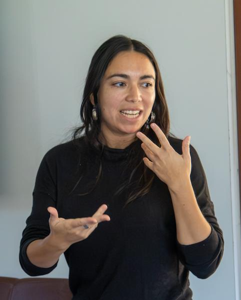

Javiera Araya-Moreno
Postdoctoral Fellow
About Me
I study legal technique, with an emphasis on criminal law and criminal justice bureaucracies, from a sociocultural perspective and through empirical research methods. My work focuses on Chile and Latin America as well as on Quebec and Canada. Adopting interdisciplinary approaches, I teach in criminology, sociology, public administration and law. Like this website, my research, writing and teaching are in Spanish, French and English. I am a postdoctoral fellow in the University of Southern California’s Department of Anthropology, under the supervision of Prof. Andrea Ballestero. I can be contacted at ja_327[at]usc.edu